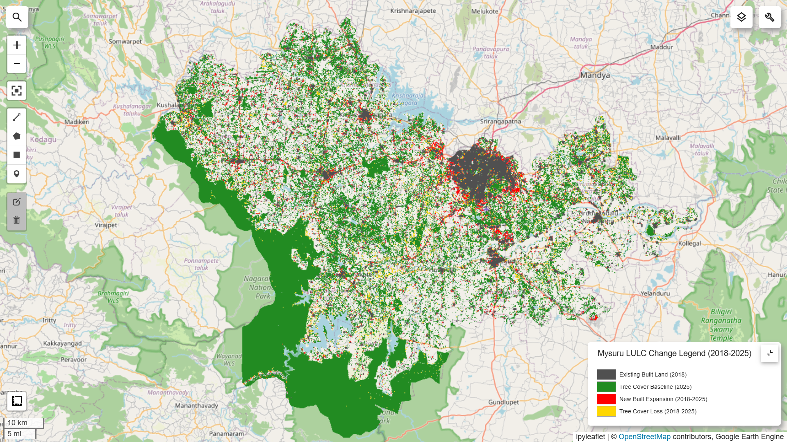
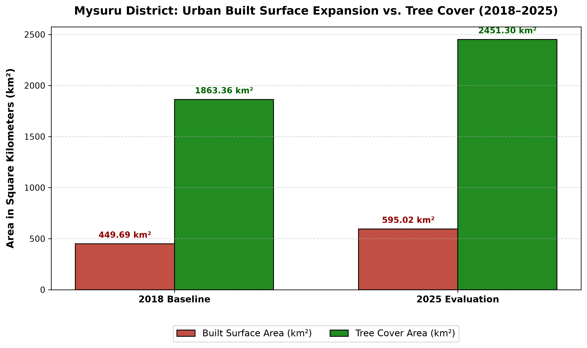

Urban Data Analysis Portfolio
Course Submissions for Spatial Web Mapping & Google Earth Engine Analysis
Question 1 · Interactive Spatial Web Map
Task Overview: Interactive geospatial mapping interface for waste management locations and spatial infrastructure visualization.
Question 2 · Google Earth Engine Urban Analysis (Mysuru)
Research Focus: Quantitative evaluation of urban built-up surface expansion and tree cover dynamics in Mysuru, India (2018–2025) using Google Dynamic World (10m LULC) and JRC GHSL reference data.
1. Spatial Patterns & Change Hotspot Map
The static change map combines baseline land cover from 2018 with 2025 observations. Logical Boolean image masking isolates new built expansion hotspots (Red) and tree canopy loss (Yellow) against existing urban territory (Dark Gray) and retained baseline tree canopy (Forest Green).

2. Dynamic Temporal Evolution (2018–2025)
An annual mode composite was computed for each year between 2018 and 2025 using a consistent dry-season temporal filter (January 1 – April 30) to generate a seamless dynamic time slider.

3. Quantitative Summary & Trend Analysis

| LULC Indicator / Class | 2018 Baseline | 2025 Evaluation | Net Area Change | Percentage Change (%) |
|---|---|---|---|---|
| Built Surface Area | 449.69 km² | 595.02 km² | +145.33 km² | +32.32% |
| Tree Canopy Cover | 1,863.36 km² | 2,451.30 km² | +587.94 km² | +31.55% |
4. Discussion & Methodological Limitations
Spatial Growth Patterns: Urban expansion in Mysuru exhibits a clear radial-concentric growth pattern centered around the municipal core, with significant acceleration along major transport corridors such as the Outer Ring Road and the Bengaluru-Mysuru highway. Peripheral conversion primarily replaces fragmented scrublands and peri-urban vegetation layouts with commercial and residential structures.
Methodological Limitations & Dataset Constraints:
- Spatial Resolution (10m vs. Coarse Grids): Dynamic World utilizes 10-meter optical imagery from Copernicus Sentinel-2. While highly effective for contiguous built structures, individual buildings or narrow rural access roads fall below pixel resolution limits.
- Consistent Seasonal Window: A fixed annual filter window (Jan 1 – Apr 30) was applied to avoid false land cover transitions caused by monsoon-driven vegetation green-up and persistent cloud cover.
- Spectral Class Confusion: Dense tree canopy plots, horticultural farms, and urban parks can occasionally share spectral similarities with general vegetative categories depending on solar zenith angles during satellite acquisition passes.
Citations & Boundary Sources:
• City Boundary: FAO GAUL 2015 Level-2 Administrative Boundary for Mysuru District.
• Primary Dataset: Google Dynamic World 10m Near Real-Time LULC (GOOGLE/DYNAMICWORLD/V1).
• Structural Validation: European Commission JRC Global Human Settlement Layer (JRC/GHSL/P2023A/GHS_BUILT_S).